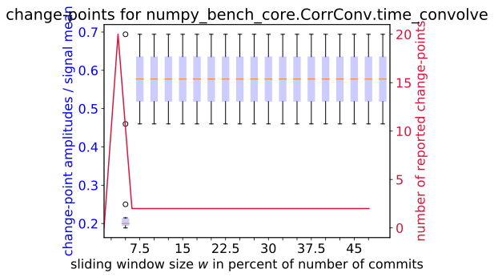
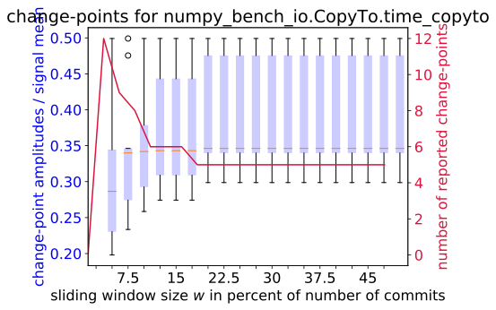
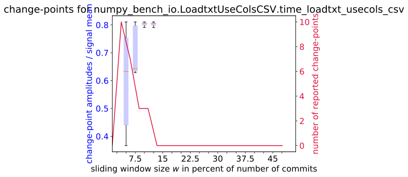
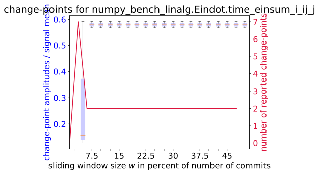
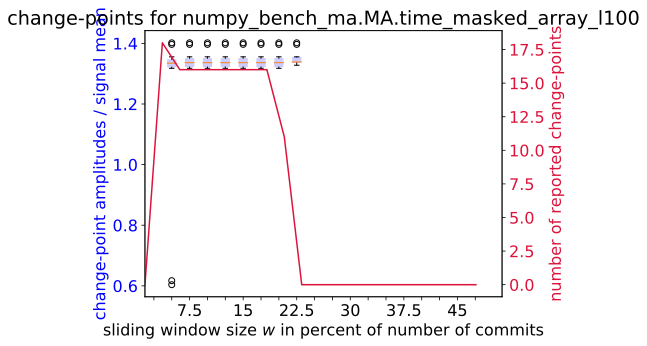
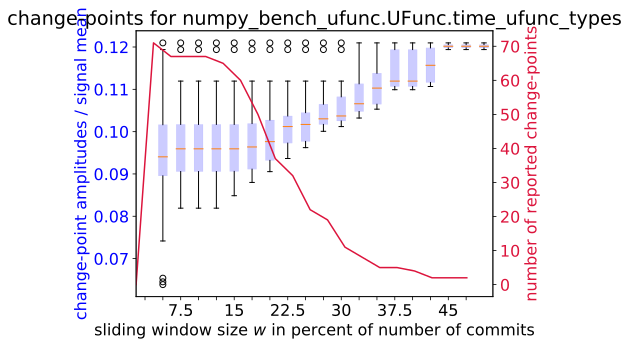

Variant / Benchmark:
numpy_bench_app.LaplaceInplace.time_it
numpy_bench_app.MaxesOfDots.time_it
numpy_bench_core.Core.time_arange_100
numpy_bench_core.Core.time_array_1
numpy_bench_core.Core.time_array_empty
numpy_bench_core.Core.time_array_l
numpy_bench_core.Core.time_array_l1
numpy_bench_core.Core.time_array_l100
numpy_bench_core.Core.time_diag_l100
numpy_bench_core.Core.time_diagflat_l100
numpy_bench_core.Core.time_diagflat_l50_l50
numpy_bench_core.Core.time_dstack_l
numpy_bench_core.Core.time_empty_100
numpy_bench_core.Core.time_eye_100
numpy_bench_core.Core.time_eye_3000
numpy_bench_core.Core.time_hstack_l
numpy_bench_core.Core.time_identity_100
numpy_bench_core.Core.time_identity_3000
numpy_bench_core.Core.time_ones_100
numpy_bench_core.Core.time_tril_l10x10
numpy_bench_core.Core.time_triu_l10x10
numpy_bench_core.Core.time_vstack_l
numpy_bench_core.Core.time_zeros_100
numpy_bench_core.CorrConv.time_convolve
numpy_bench_core.CorrConv.time_correlate
numpy_bench_core.CountNonzero.time_count_nonzero
numpy_bench_core.CountNonzero.time_count_nonzero_axis
numpy_bench_core.CountNonzero.time_count_nonzero_multi_axis
numpy_bench_core.Indices.time_indices
numpy_bench_core.MA.time_masked_array
numpy_bench_core.MA.time_masked_array_l100
numpy_bench_core.MA.time_masked_array_l100_t100
numpy_bench_core.PackBits.time_packbits
numpy_bench_core.PackBits.time_packbits_axis0
numpy_bench_core.PackBits.time_packbits_axis1
numpy_bench_core.Temporaries.time_large
numpy_bench_core.Temporaries.time_large2
numpy_bench_core.Temporaries.time_mid
numpy_bench_core.Temporaries.time_mid2
numpy_bench_core.UnpackBits.time_unpackbits
numpy_bench_core.UnpackBits.time_unpackbits_axis0
numpy_bench_core.UnpackBits.time_unpackbits_axis1
numpy_bench_function_base.Bincount.time_bincount
numpy_bench_function_base.Bincount.time_weights
numpy_bench_function_base.Histogram1D.time_fine_binning
numpy_bench_function_base.Histogram1D.time_full_coverage
numpy_bench_function_base.Histogram1D.time_small_coverage
numpy_bench_function_base.Histogram2D.time_fine_binning
numpy_bench_function_base.Histogram2D.time_full_coverage
numpy_bench_function_base.Histogram2D.time_small_coverage
numpy_bench_function_base.Median.time_even
numpy_bench_function_base.Median.time_even_inplace
numpy_bench_function_base.Median.time_even_small
numpy_bench_function_base.Median.time_odd
numpy_bench_function_base.Median.time_odd_inplace
numpy_bench_function_base.Median.time_odd_small
numpy_bench_function_base.Percentile.time_percentile
numpy_bench_function_base.Percentile.time_quartile
numpy_bench_function_base.Select.time_select
numpy_bench_function_base.Select.time_select_larger
numpy_bench_function_base.Sort.time_argsort
numpy_bench_function_base.Sort.time_argsort_random
numpy_bench_function_base.Sort.time_sort
numpy_bench_function_base.Sort.time_sort_equal
numpy_bench_function_base.Sort.time_sort_inplace
numpy_bench_function_base.Sort.time_sort_many_equal
numpy_bench_function_base.Sort.time_sort_random
numpy_bench_function_base.Sort.time_sort_worst
numpy_bench_function_base.Where.time_1
numpy_bench_function_base.Where.time_2
numpy_bench_function_base.Where.time_2_broadcast
numpy_bench_indexing.Indexing.time_op
numpy_bench_indexing.IndexingSeparate.time_mmap_fancy_indexing
numpy_bench_indexing.IndexingSeparate.time_mmap_slicing
numpy_bench_indexing.IndexingStructured0D.time_array_all
numpy_bench_indexing.IndexingStructured0D.time_array_slice
numpy_bench_indexing.IndexingStructured0D.time_scalar_all
numpy_bench_indexing.IndexingStructured0D.time_scalar_slice
numpy_bench_io.Copy.time_cont_assign
numpy_bench_io.Copy.time_memcpy
numpy_bench_io.Copy.time_memcpy_large_out_of_place
numpy_bench_io.Copy.time_strided_assign
numpy_bench_io.Copy.time_strided_copy
numpy_bench_io.CopyTo.time_copyto
numpy_bench_io.CopyTo.time_copyto_8_dense
numpy_bench_io.CopyTo.time_copyto_8_sparse
numpy_bench_io.CopyTo.time_copyto_dense
numpy_bench_io.CopyTo.time_copyto_sparse
numpy_bench_io.LoadtxtCSVComments.time_comment_loadtxt_csv
numpy_bench_io.LoadtxtCSVDateTime.time_loadtxt_csv_datetime
numpy_bench_io.LoadtxtCSVSkipRows.time_skiprows_csv
numpy_bench_io.LoadtxtCSVStructured.time_loadtxt_csv_struct_dtype
numpy_bench_io.LoadtxtCSVdtypes.time_loadtxt_dtypes_csv
numpy_bench_io.LoadtxtReadUint64Integers.time_read_uint64
numpy_bench_io.LoadtxtReadUint64Integers.time_read_uint64_neg_values
numpy_bench_io.LoadtxtUseColsCSV.time_loadtxt_usecols_csv
numpy_bench_io.Savez.time_vb_savez_squares
numpy_bench_lib.Nan.time_nanargmax
numpy_bench_lib.Nan.time_nanargmin
numpy_bench_lib.Nan.time_nancumprod
numpy_bench_lib.Nan.time_nancumsum
numpy_bench_lib.Nan.time_nanmax
numpy_bench_lib.Nan.time_nanmean
numpy_bench_lib.Nan.time_nanmedian
numpy_bench_lib.Nan.time_nanmin
numpy_bench_lib.Nan.time_nanpercentile
numpy_bench_lib.Nan.time_nanprod
numpy_bench_lib.Nan.time_nanquantile
numpy_bench_lib.Nan.time_nanstd
numpy_bench_lib.Nan.time_nansum
numpy_bench_lib.Nan.time_nanvar
numpy_bench_lib.Pad.time_pad
numpy_bench_linalg.Eindot.time_dot_a_b
numpy_bench_linalg.Eindot.time_dot_d_dot_b_c
numpy_bench_linalg.Eindot.time_dot_trans_a_at
numpy_bench_linalg.Eindot.time_dot_trans_a_atc
numpy_bench_linalg.Eindot.time_dot_trans_at_a
numpy_bench_linalg.Eindot.time_dot_trans_atc_a
numpy_bench_linalg.Eindot.time_einsum_i_ij_j
numpy_bench_linalg.Eindot.time_einsum_ij_jk_a_b
numpy_bench_linalg.Eindot.time_einsum_ijk_jil_kl
numpy_bench_linalg.Eindot.time_inner_trans_a_a
numpy_bench_linalg.Eindot.time_inner_trans_a_ac
numpy_bench_linalg.Eindot.time_matmul_a_b
numpy_bench_linalg.Eindot.time_matmul_d_matmul_b_c
numpy_bench_linalg.Eindot.time_matmul_trans_a_at
numpy_bench_linalg.Eindot.time_matmul_trans_a_atc
numpy_bench_linalg.Eindot.time_matmul_trans_at_a
numpy_bench_linalg.Eindot.time_matmul_trans_atc_a
numpy_bench_linalg.Eindot.time_tensordot_a_b_axes_1_0_0_1
numpy_bench_linalg.Linalg.time_op
numpy_bench_linalg.Lstsq.time_numpy_linalg_lstsq_a__b_float64
numpy_bench_ma.Concatenate.time_it
numpy_bench_ma.Indexing.time_0d
numpy_bench_ma.Indexing.time_1d
numpy_bench_ma.Indexing.time_scalar
numpy_bench_ma.MA.time_masked_array
numpy_bench_ma.MA.time_masked_array_l100
numpy_bench_ma.MA.time_masked_array_l100_t100
numpy_bench_ma.UFunc.time_1d
numpy_bench_ma.UFunc.time_2d
numpy_bench_ma.UFunc.time_scalar
numpy_bench_ma.UFunc.time_scalar_1d
numpy_bench_overrides.ArrayFunction.time_mock_broadcast_to_duck
numpy_bench_overrides.ArrayFunction.time_mock_broadcast_to_numpy
numpy_bench_overrides.ArrayFunction.time_mock_concatenate_duck
numpy_bench_overrides.ArrayFunction.time_mock_concatenate_many
numpy_bench_overrides.ArrayFunction.time_mock_concatenate_mixed
numpy_bench_overrides.ArrayFunction.time_mock_concatenate_numpy
numpy_bench_random.Permutation.time_permutation_1d
numpy_bench_random.Permutation.time_permutation_2d
numpy_bench_random.Permutation.time_permutation_int
numpy_bench_random.Randint.time_randint_fast
numpy_bench_random.Randint.time_randint_slow
numpy_bench_random.Randint_dtype.time_randint_fast
numpy_bench_random.Randint_dtype.time_randint_slow
numpy_bench_random.Random.time_rng
numpy_bench_random.Shuffle.time_100000
numpy_bench_records.Records.time_fromarrays_formats_as_list
numpy_bench_records.Records.time_fromarrays_formats_as_string
numpy_bench_records.Records.time_fromarrays_w_dtype
numpy_bench_records.Records.time_fromarrays_wo_dtype
numpy_bench_records.Records.time_fromstring_formats_as_list
numpy_bench_records.Records.time_fromstring_formats_as_string
numpy_bench_records.Records.time_fromstring_w_dtype
numpy_bench_reduce.AddReduce.time_axis_0
numpy_bench_reduce.AddReduce.time_axis_1
numpy_bench_reduce.AddReduceSeparate.time_reduce
numpy_bench_reduce.AnyAll.time_all_fast
numpy_bench_reduce.AnyAll.time_all_slow
numpy_bench_reduce.AnyAll.time_any_fast
numpy_bench_reduce.AnyAll.time_any_slow
numpy_bench_reduce.MinMax.time_max
numpy_bench_reduce.MinMax.time_min
numpy_bench_reduce.SmallReduction.time_small
numpy_bench_shape_base.Block.time_3d
numpy_bench_shape_base.Block.time_block_complicated
numpy_bench_shape_base.Block.time_block_simple_column_wise
numpy_bench_shape_base.Block.time_block_simple_row_wise
numpy_bench_shape_base.Block.time_nested
numpy_bench_shape_base.Block.time_no_lists
numpy_bench_shape_base.Block2D.time_block2d
numpy_bench_ufunc.ArgParsing.time_add_arg_parsing
numpy_bench_ufunc.ArgParsingReduce.time_add_reduce_arg_parsing
numpy_bench_ufunc.Broadcast.time_broadcast
numpy_bench_ufunc.Custom.time_and_bool
numpy_bench_ufunc.Custom.time_count_nonzero
numpy_bench_ufunc.Custom.time_nonzero
numpy_bench_ufunc.Custom.time_not_bool
numpy_bench_ufunc.Custom.time_or_bool
numpy_bench_ufunc.CustomInplace.time_char_or
numpy_bench_ufunc.CustomInplace.time_char_or_temp
numpy_bench_ufunc.CustomInplace.time_double_add
numpy_bench_ufunc.CustomInplace.time_double_add_temp
numpy_bench_ufunc.CustomInplace.time_float_add
numpy_bench_ufunc.CustomInplace.time_float_add_temp
numpy_bench_ufunc.CustomInplace.time_int_or
numpy_bench_ufunc.CustomInplace.time_int_or_temp
numpy_bench_ufunc.CustomScalar.time_add_scalar2
numpy_bench_ufunc.CustomScalar.time_divide_scalar2
numpy_bench_ufunc.CustomScalar.time_divide_scalar2_inplace
numpy_bench_ufunc.CustomScalar.time_less_than_scalar2
numpy_bench_ufunc.Scalar.time_add_scalar
numpy_bench_ufunc.Scalar.time_add_scalar_conv
numpy_bench_ufunc.Scalar.time_add_scalar_conv_complex
numpy_bench_ufunc.UFunc.time_ufunc_types





